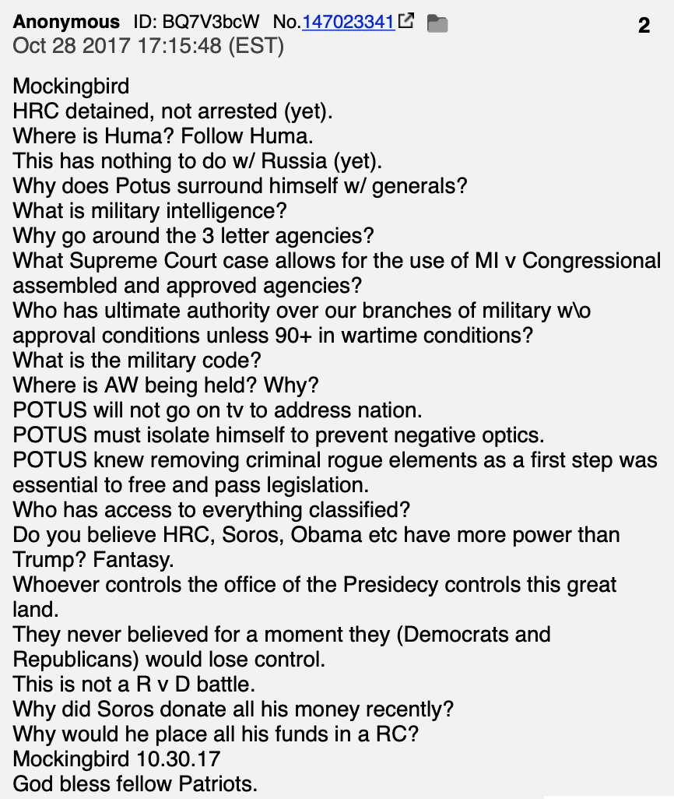
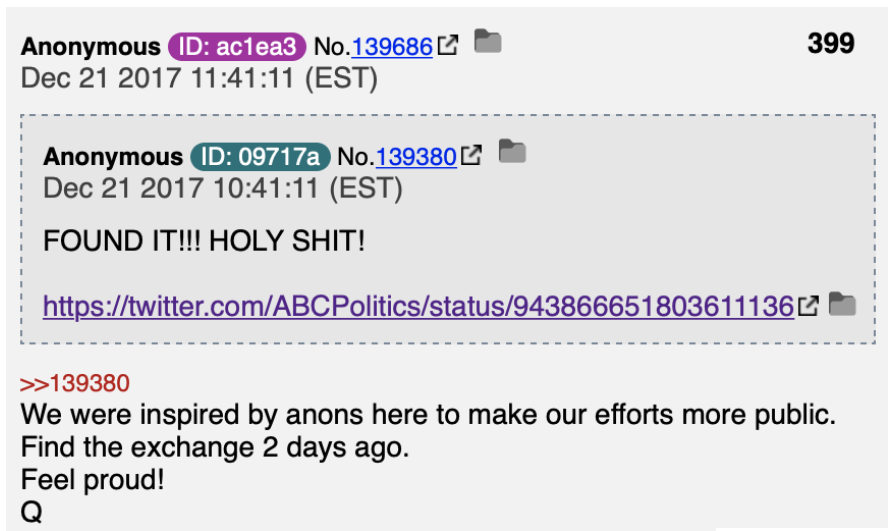

Posts from "Q" known as "Qdrops" form the central tenants of the conspiracy theory. The following timeline summary and wordmaps are formed from analyzing the 4952 Qdrops between October 2017 to November 2020.
The first documented Q drop emerged on October 28, 2017 under the /pol/ sub board of 4chan, the “politically incorrect” and anonymous board notorious for its grotesque content and memes.
Seventeen Q drops appeared within four days in October. These posts were attributed to Q through their tripcode, a unique identifier on 4chan that proves a series of anonymous posts were written by the same person or people.
From the first two words of the drops (“HRC extradition”), QAnon was recycling ideas from Pizzagate, that Hillary Clinton was a member of child sex trafficking cabal. The next seventeen posts established Donald Trump’s role in the theory, as the central hero bent on exposing the cabal, and introduced “operation mockingbird,” an alleged plot by mainstream media to hide the global elites' satanic crimes through fake news.
Notably, many of the initial Q drops are phrased as a series of questions; that generate engagement among followers of the conspiracy theory.

November 2017
223 QAnon drops appeared in November 2017. A majority of the November drops expanded upon previous theories on Hillary Clinton, and added to the cast of characters with conspiracy theories regarding Huma (Clinton’s political aid during the 2016 campaign), Barack Obama, Iran, and Saudi Arabia.
Many key terms within the conspiracy theory were also introduced, such as “Alice and Wonderland,” code for “Hillary Clinton and Saudi Arabia.” “Antifa,” a political terminology now popularized in American politics, also emerged with its first use by Q on October 30, 2017.
Notable Developments:
Conspiracy theories emerge that Barack Obama and Hillary Clinton were beholden to Saudi interests, particularly owing money to Bin Talal, a Saudi prince and businessman.
Conspiracy theories emerge regarding collusion between the Obama administration and Iran and North Korea, regarding secretly enabling their nuclear weapons programs.
December 2017, Notable Developments

John McCain joins the cast of bad actors in the QAnon theory, alongside Hillary Clinton and Barack Obama, for alleged connections to terrorists, the Free Syrian Army, and Saudi Arabia.
The QAnon community is excited by the possibility of external validation, where a government press release entitled “United States Sanctions Human Rights Abusers and Bad Actors Across the Globe,” is believed to be authored by Q.
https://twitter.com/ABCPolitics/status/943866651803611136
Barack Obama, also referred to as “Hussein” in the QAnon community, is given the codename “renegade” and is accused of being a traitor to the United States.
Instead of it’s singular focus on corrupt individuals, the theory evolves to target organizations, including the Red Cross, whose Haitian office is believed by Qanon followers to be a hotspot for child trafficking.
January 2018, Notable Developments
Donald Trump is believed to speak directly to the QAnon community via Twitter. The “evidence” was that Trump had misspelled a tweet, then corrected the word “consentual” to “consequential.” 8kun boards bursted discussions regarding the added “q”, and a later Q drop affirmed for the community their connection with Trump.
The QAnon community migrates to the 8chan message boards after 4chan closes. Q re-establishes its authority, and confirms a tripcode on the new platform, but suspicions arise regarding Q’s identity.
Edward Snowden, whose initial role in the theory is controversial, is believed to be a CIA plant in the NSA, with the CIA allegedly a tool of the corrupt cabal.
In the world outside of conspiracies, the US government enters a 35 day shutdown, and special counsel Robert Mueller leads an investigation into possible collusion between Russia and the Trump campaign during the 2016 election. Both issues affect the topics of Q drops.
Top Topics:
Robert Mueller
Fake News
Russia
Rod Rosenstein